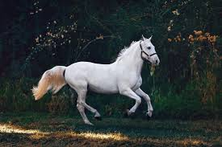

Animal world
HOME | SERVICES | IMAGE GALLERY | ABOUT US | CONTACT US |

Animal, (kingdom Animalia), any of a group of multicellular eukaryotic organisms
(i.e., as distinct from bacteria, their deoxyribonucleic acid, or DNA, is contained in a membrane-bound nucleus).
They are thought to have evolved independently from the unicellular eukaryotes.
Animals differ from members of the two other kingdoms of multicellular eukaryotes, the plants (Plantae) and the fungi (Mycota), in fundamental variations in morphology and physiology.
This is largely because animals have developed muscles and hence mobility, a characteristic that has stimulated the further development of tissues and organ systems.